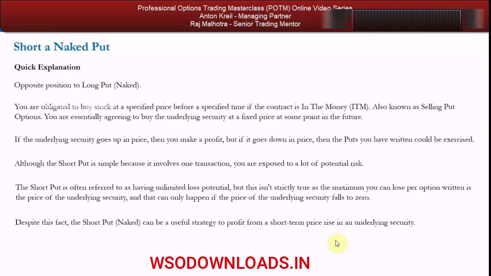
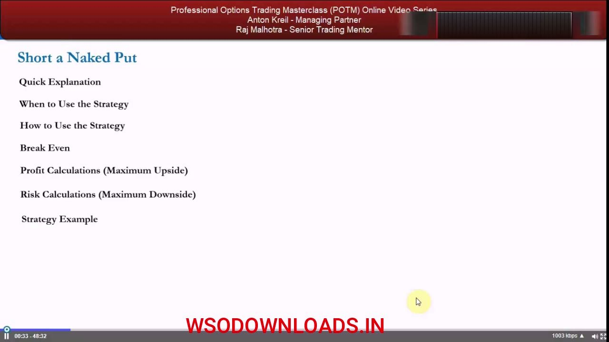
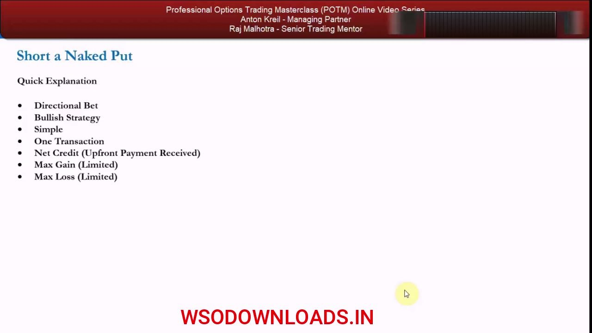
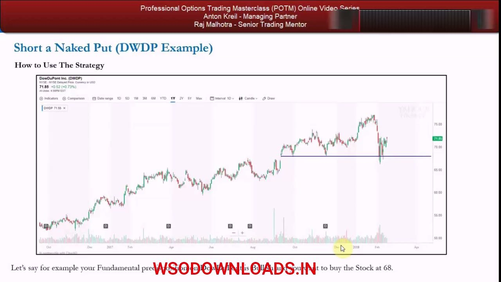
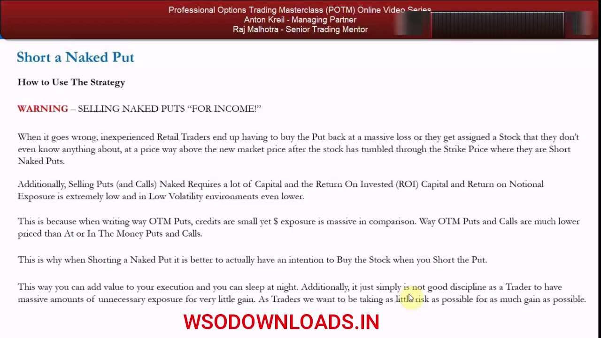
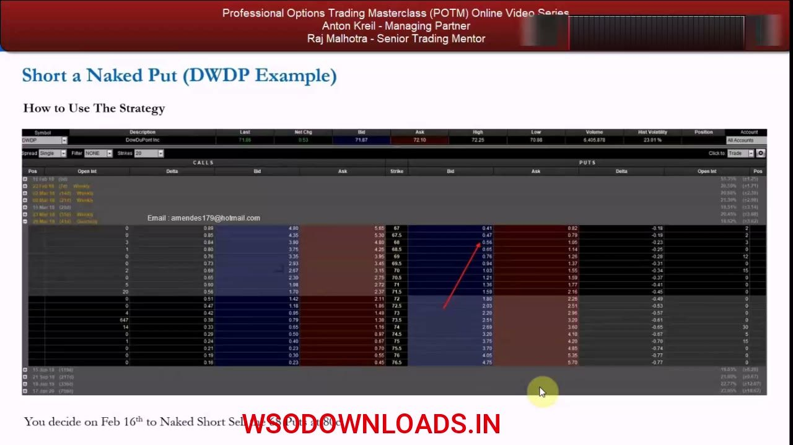
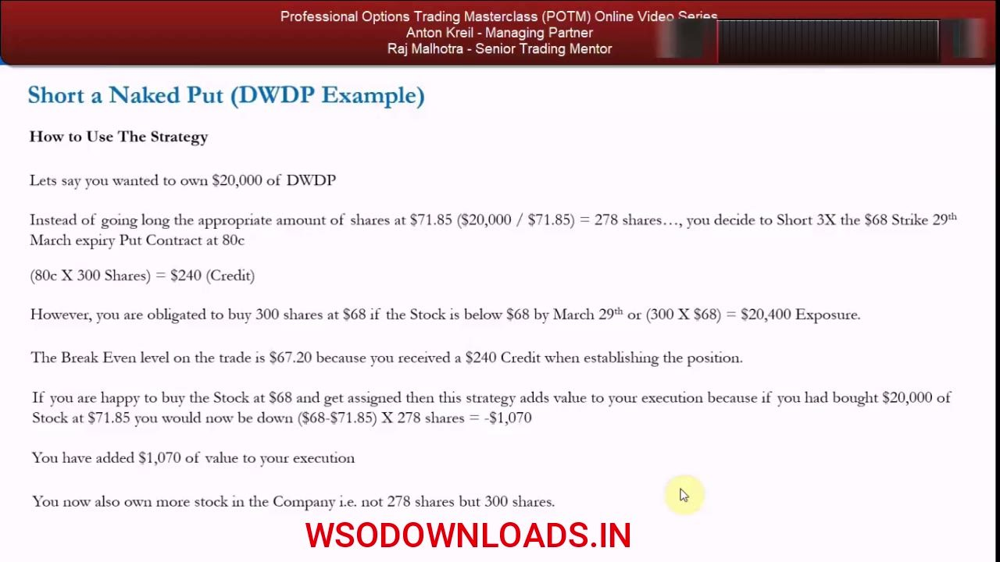
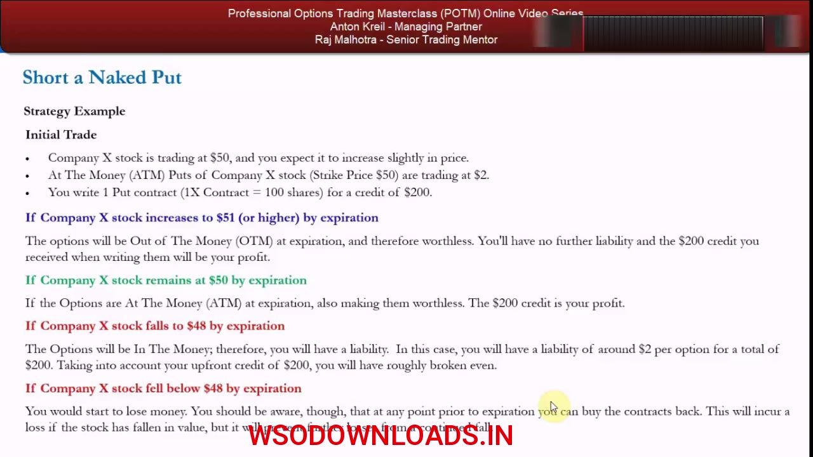

Naked Short Puts
Selling a put for a credit — a genuine execution tool to get long a stock at a discount, and the single most dangerous 'income' pitch in retail options.
The short naked put is the opposite of a long put: you SELL the put, pocket a credit upfront, and take on the obligation to BUY the stock at the strike if it's ITM at expiry. Used with the honest intention to own the stock lower, it adds value to your execution — used as an 'income' machine, it's how retail accounts blow up.
The gist
- A short naked put is the OPPOSITE of a long put: you SELL the put and receive a NET CREDIT (premium upfront), taking on the obligation to BUY the underlying at the strike before expiry if the contract is ITM (assignment).
- Attributes: Directional · Bullish · Simple · 1 transaction · Net Credit · Max Gain LIMITED (the premium) · Max Loss LIMITED (strike − premium, per share).
- The 'unlimited loss' label is a MYTH — max loss is DEFINED: the most you lose per option is the strike minus the premium, and that worst case only happens if the stock falls to zero.
- Formulas: Breakeven = strike − premium; Max profit = premium (the credit); Loss per option written = strike − underlying + premium; max profit is made when underlying ≥ strike.
- CORRECT retail use (HIGH usefulness) = an EXECUTION TOOL to get long at a discount when you genuinely intend to own the stock — e.g. sell a put 5% OTM: keep the credit if it stays OTM, or own the stock 5% lower (added execution value) if assigned.
- It also profits from time decay on a flat tape, and from selling into inflated implied volatility during a broad market sell-off (higher credit for the same strike).
- As a hedge for a SHORT stock position it's mediocre: profit is capped at the premium while the short's downside is unlimited — a LONG out-of-the-money CALL (unlimited upside) is a far better hedge.
- INCOME-FARMING WARNING: do NOT sell naked puts 'for income' — pitched via 1σ/2σ '68% / 95% chance of making money' stats; tiny credits vs massive $ exposure; low ROI (worse in low vol); gap risk / a tail move wipes out all accumulated income and more. 'The graveyard of former options traders is littered with the bodies of naked short put sellers.' The market is not an ATM.
- DWDP worked example: spot $71.85, Hist Vol 23.01%, buy target $68; short 3× the $68-strike 29-Mar put @ $0.80 → $240 credit on $20,400 exposure, breakeven $67.20 (300 shares vs 278 if bought outright). An overnight chemical-spill gap to $60 = −$2,160 = −800% on the $240 credit.
What a short naked put actually is
- It is the OPPOSITE position to a Long Put (Naked): here you SELL / write the put.
- You are obligated to BUY the stock at a specified strike before a specified time IF the contract is In The Money (ITM) — also called Selling Put Options; you are agreeing to buy the underlying at a fixed price in the future.
- The counterparty is LONG the put — they bought the right to sell YOU the stock. If the underlying goes UP you make a profit; if it goes DOWN the puts you wrote can be exercised and you lose.
- Simple (one transaction) but you are exposed to a lot of potential risk when short an option.
Selling a put flips the long-put trade: you collect the premium today and accept the obligation to buy the shares at the strike if the buyer exercises. Simplicity of a single transaction hides real short-option risk.

The 'unlimited loss' myth
- The short put is often described as having UNLIMITED loss potential — but that isn't strictly true.
- The maximum you can lose per option written is the PRICE OF THE UNDERLYING security, and that only happens if the stock falls all the way to ZERO.
- So the maximum loss is LIMITED, not unlimited — bounded by how far (in dollars) the stock can actually fall.
- Despite the risk, it can still be a useful strategy to profit from a short-term price rise in the underlying.
If an educator tells you selling puts has unlimited loss, correct them: the loss is defined and capped by the stock going to zero. It is large, but it is not infinite — the payoff is asymmetric, not unbounded like a naked short call.

The attributes template
- Directional Bet · Bullish Strategy · Simple · One Transaction.
- Net Credit — an upfront payment is RECEIVED when you put the trade on.
- Max Gain: LIMITED (capped at the premium collected).
- Max Loss: LIMITED (only by how far the stock can fall — i.e. to zero).
The implicit statement of a short put is bullish: 'if this stock reaches a certain level, I'd be willing to buy it.' You are paid a credit today for taking that obligation, with capped upside and a large-but-defined downside.

When to use it: a small up-move or a flat tape
- It's a BULLISH strategy — use it when you expect the security to rise, but only by a SMALL amount over your chosen horizon (profit is fixed at the premium).
- You can also profit if the stock DOESN'T MOVE AT ALL, because as the seller you benefit from time decay — the option's value accelerates toward zero as expiry approaches.
- It offers NO real protection against a significant fall, so only use it when you're very confident the stock won't drop below your strike.
- Best case for retail: you actually INTEND to own the stock, so an OTM short put becomes a very effective way to enter a new long position.
Because your upside is fixed, the short put shines on flat-to-slightly-up tape where time decay does the work — but it gives no downside cushion, so conviction that the strike holds is essential.
The correct retail use: buy a stock at a discount
- Fundamentally bullish but unsure of your timing? Sell a put with a strike ~5% OTM (5% below market) and receive a credit.
- If the stock falls to the strike and you're assigned, you get a LONG stock position 5% lower than today — you've ADDED 5% of value to your execution (buying now would have cost you that 5%).
- If the put expires OTM (worthless), you simply KEEP the credit — extra profit that can go toward buying the stock anyway, meaning less sideline capital is needed.
- This is why the short naked put is rated HIGH in usefulness for the retail trader: it's an execution tool, not an income scheme.
Decide in advance how much stock you'd buy and where. The short put lets you name a lower price you're happy to own at, get paid to wait, and either pocket the credit or own the shares at a genuine discount to today's market.

Two more edges: sell-off IV, and time decay
- In a broad market sell-off where your thesis is unchanged, selling puts in names you want is doubly attractive: you enter lower AND you sell into INFLATED implied volatility.
- Higher IV across the board means a HIGHER CREDIT for the same strike — you're paid more to take on the same obligation.
- On a flat tape, time decay still earns you the premium as the option value bleeds to zero into expiry.
- Risk of the good case: if the stock rallies past today's price by more than the credit, you've given up the upside and actually SUBTRACTED value from your execution (you missed owning it).
The best entry is a market-wide sell-off in a name you already wanted: cheaper stock plus richer premium. The trade-off is opportunity cost — a rally leaves you with only the small credit instead of the shares.
'Selling a put' vs 'shorting a naked put' — the hedge case
- The two phrases aren't strictly identical: you can hold OTHER positions that offset the put's value change (so it's not 'naked').
- Example: if you're SHORT the stock, selling a put can be a short-term hedge — collect premium, and if the stock falls through the strike you cover some/all of your short at a price you were happy to buy back at.
- If the stock squeezes higher, at least the collected premium offsets some of the loss on the short.
- But it's a WEAK hedge: profit is capped at the premium while the short's dollar downside is unlimited — it only helps against a SMALL rise.
Against a short stock position the sold put is a limited, situational hedge — useful only if you're confident the strike is reached and you're happy to cover there. It cannot protect against a runaway squeeze.
A long call is the better hedge
- For genuine protection of a short stock position, buy an at-the-money or slightly OTM CALL — its upside is UNLIMITED.
- If the stock you're short goes on a 'dynamite rally,' the long call's profit is unlimited, matching the unlimited loss on the short.
- The sold put can never do this: its cap is the premium, so a big squeeze overwhelms it.
- Choose by intention: real hedge against a squeeze → buy a call; happy to cover on a small dip and pick up a credit → write a put.
The rule is intention-driven. If you truly need to be protected against an upside squeeze, the long call's unlimited upside is the correct hedge; the short put is only a modest cushion for a small move.
How intention decides the trade
- If you're simply bullish and want to own the stock now, it makes NO sense to short ATM or ITM naked puts — just buy the stock.
- It DOES add value if: you're already long and want to add lower, you want to open a new long at a lower price, or you want to buy fundamentally but doubt your short-term timing.
- Outside those cases (execution value or a modest hedge), the short naked put doesn't add much to a retail strategy.
- This sets up the red-carpet WARNING against the 'income' pitch.
The strategy earns its place only as an execution tool or a limited hedge tied to a real intention to own or cover. Absent that intention, there's no edge — and the temptation to farm premium 'for income' is where retail gets destroyed.

WARNING: selling naked puts 'for income'
- When it goes wrong, retail traders buy the put back at a massive loss OR get assigned a stock they know nothing about, way above the new market price after it's tumbled through the strike.
- Selling puts (and calls) naked requires a lot of CAPITAL, and ROI / return on notional exposure is extremely low — even lower in low-volatility environments.
- Way-OTM puts have SMALL credits but MASSIVE dollar exposure (far cheaper than at/in-the-money options) — huge risk for tiny gain.
- Better discipline: intend to buy the stock when you short the put, so you 'can sleep at night.' Traders take as LITTLE risk as possible for as MUCH gain as possible — never the reverse.
The income pitch inverts good risk-reward: you risk enormous notional exposure to harvest a trickle of premium. Doing it only when you actually want the shares removes the trap and keeps the exposure honest.
The coercive 1σ / 2σ pitch
- Educators / former floor traders / market makers / brokers with conflicts of interest push selling OTM or way-OTM naked puts to 'generate income' in your account.
- The pitch uses standard-deviation analysis of historical moves: sell puts OUTSIDE the 1σ move (~68% chance of making money) or 2σ move (~95%, i.e. only ~1 in 20 loses).
- Wrapped in a lifestyle sell — the 'nomadic trader' by the pool making $250–$500 a day writing puts.
- Reality: 'the graveyard of former options traders is littered with the bodies of naked short put sellers.' You can win 20, 30, 40, 50 times in a row — then the one that catches you costs all your profit and more. The stock market is NOT an ATM.
History doesn't oblige you just because you want income. Selling outside 1σ/2σ wins most of the time, which is exactly what makes it seductive — until the tail event arrives and wipes out every prior gain at once.
DWDP example: the setup
- DowDuPont (DWDP) trading at $71.85 (Last 71.86), Hist Volatility 23.01%; you're fundamentally bullish and want to own it at $68 (a blue support line).
- Buying now at $71.85 risks $3.85 to the $68 level — a 5.35% drop — while you doubt your 2–4 week timing.
- Date is Feb 16th; on the 29-Mar expiry the $68-strike put shows a wide market (bid 0.56 / ask 1.05); you place an offer to SELL the puts at $0.80.
- You originally wanted $20,000 of DWDP → $20,000 / $71.85 = 278 shares if bought outright.
You'd rather own DWDP $3.85 lower at support than chase it here. Instead of buying 278 shares now, you offer to sell the $68 puts at $0.80 — getting paid to wait for your price.

DWDP example: the trade math
- Short 3× the $68-strike 29-Mar put @ $0.80 → credit = $0.80 × 300 shares = $240 (the 100-multiplier forces 300 shares, close to the intended 278).
- You're obligated to buy 300 shares at $68 if below $68 by Mar 29 → 300 × $68 = $20,400 exposure.
- Breakeven = $68 − $0.80 = $67.20 (strike minus the credit received).
- If assigned at $68, you've added value: buying $20,000 at $71.85 would have you down ($68 − $71.85) × 278 = −$1,070 — so you ADDED $1,070 of execution value AND own MORE stock (300 vs 278).
If DWDP dips to your level you own more shares, lower, than buying outright — a $1,070 improvement in execution. The credit and the discount both work in your favor, provided you genuinely wanted the stock.
DWDP example: how it goes wrong (gap risk)
- Upside miss: if DWDP rallies to $75 you forgo $3.15 × 278 = $875.70 of stock profit and keep only the $240 credit — you'd have been better off buying.
- Tail case (income mindset): overnight, DWDP has a chemical spill; a plant is shut a year, group earnings hit ~10%, and the stock OPENS at $60.
- You've lost $7.20 per contract = $2,160 for the sake of a $240 credit.
- Percentage loss = (7.20 − 0.80) / 0.80 × 100 = 800%. If assigned, you own a stock you know nothing about, down 10%+ — a bankruptcy scenario for retail.
The same trade that added value with an honest intention becomes a disaster when done for income: an overnight gap through the strike leaves no chance to exit, turning a $240 credit into a $2,160 (−800%) loss.

Company X example: the formalized calculations
- Company X at $50; you expect a slight rise. ATM $50-strike puts trade at $2 → write 1 contract (100 shares) for a $200 credit.
- Stock ≥ $51 at expiry: puts OTM, worthless → keep the $200 credit (max profit).
- Stock stays at $50: puts ATM, worthless → keep the $200 credit.
- Stock at $48 (breakeven = $50 − $2): puts ITM, ~$2 liability = $200, offset by the credit → roughly break even. Below $48 you lose money. You CAN buy the contracts back before expiry to cap losses — but you're still exposed to GAP RISK (a stock can go $50→$40 close-to-open with no chance to trade out).
Company X formalizes the payoff: max profit is the $200 premium, breakeven is strike minus premium ($48), and losses grow below that. Buying back early limits damage — but an overnight gap can bypass that exit entirely.

Glossary
- Short Put (Naked)Selling/writing a put with no offsetting position, for a net credit; the seller is obligated to buy the underlying at the strike if the option is ITM at expiry.
- Net CreditThe premium received upfront when you sell the option — the maximum profit of a short put.
- AssignmentBeing obligated to fulfill the contract — for a short put, buying the underlying shares at the strike price when the long counterparty exercises.
- In The Money (ITM)For a put, when the stock is below the strike — the put has intrinsic value and can be exercised against the seller.
- Out of The Money (OTM)For a put, when the stock is at or above the strike — the put expires worthless and the seller keeps the credit.
- BreakevenStrike price − premium received. For the DWDP example: $68 − $0.80 = $67.20.
- Max profitLimited to the premium (credit) collected; achieved when the underlying is greater than or equal to the strike at expiry.
- Max lossLimited (not unlimited) to strike − premium per share; realized only if the stock falls to zero.
- Loss per option writtenStrike price − price of the underlying + premium per option (incurred when the underlying is below strike − premium).
- Time decayThe erosion of an option's value toward zero as expiry nears; a tailwind for the option seller on a flat tape.
- Implied volatility (IV)The market's expected volatility priced into the option; higher IV (e.g. in a sell-off) means richer credits for the same strike.
- Standard deviation (1σ / 2σ)Statistical bands of historical moves used in the income pitch — ~68% of moves fall within 1σ, ~95% within 2σ; selling puts outside these bands is sold as a high win-rate strategy.
- Gap riskThe risk that a stock jumps between close and open (e.g. $50→$40) on overnight news, with no chance to trade out — the mechanism that blows up naked put sellers.
- Return on invested capital (ROI)Profit relative to capital committed; for naked puts it's extremely low (worse in low-volatility environments) versus the large notional exposure.
- Retail trader mandateAnton's framing that retail traders should take as little risk as possible for as much gain as possible — NOT sell premium 'for income' to pay bills.